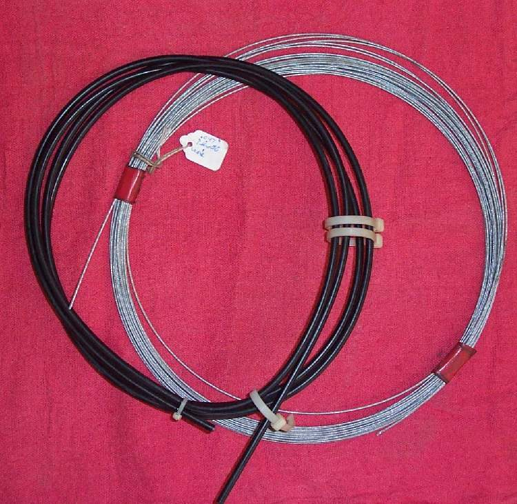

When a bike gets higher or wider handlebars, the old cables may be too short or too long. A cable can be built from bulk outer casing, bulk inner wire and solder-on ends. Getting the inner wire length exactly right is the hard part, so measure twice. When a factory cable is available, buy it: it is quicker and its ends are stronger.
Safety
- Do not build throttle or brake cables unless you are confident in the joints. A failed end can cause a crash.
- With new bars, turn them lock to lock: no cable may pull tight or kink.
You need
- Outer casing and inner wire of the same diameters as the old cable.
- The right ends for both the lever end and the engine end. Keep any special fittings and adjusters from old factory cables: some cannot be bought.
Steps
- Fit the new bars. Route a piece of string along the cable path, turn the bars to full lock both ways, and mark the length the outer needs. Allow a little extra for higher or wider bars.
- Cut the old cable and keep its adjusters and special fittings for reuse.
- Cut the outer casing to length with a proper cable cutter. File the ends square and open the liner hole so the wire slides freely.
- Fit the ferrules and any adjuster on the outer.
- Solder the first end onto the inner wire (Solder a new end onto a control cable).
- Thread the wire into the outer. Set the adjuster to its middle. Measure the exposed wire on the old cable and mark the same on the new one.
- Cut the wire leaving a short tail to peen over, and solder the second end on.
- Oil the cable before fitting (Lubricate control cables).
Check your work
- Free play can be set with room left on the adjuster both ways.
- The lever or grip works smoothly with bars straight and at each lock.
- Throttle: the grip snaps shut at every bar position, and the idle does not rise at full lock.
If it did not fix the problem
- Free play cannot be set: the wire is too long or too short. Cut a new wire.